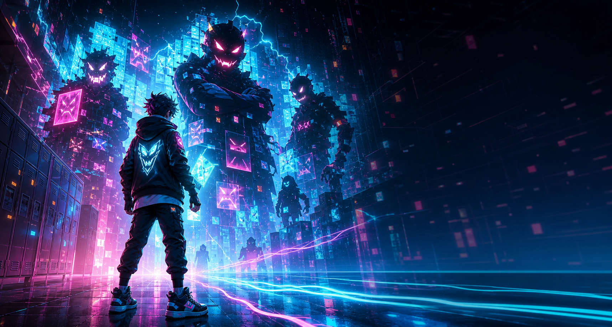

Responsive Play
Controls, feedback, and encounters are tuned around clarity first, then intensity.
Independent game studio
We build sharp, systems-led games with bold worlds, fast feedback, and a little electricity under the floorboards.
Studio
Kestrel Kinetics is focused on games that feel responsive, readable, and intense. The studio identity stays clean and professional, while each game gets room for its own tone, art direction, and development history.
Featured project

In development Cyber Bully A neon action game about pushing back inside a hostile digital schoolyard.Controls, feedback, and encounters are tuned around clarity first, then intensity.
Each project gets a strong visual identity that supports the game instead of decorating around it.
Public-facing updates show progress cleanly while keeping private production details private.
Contact